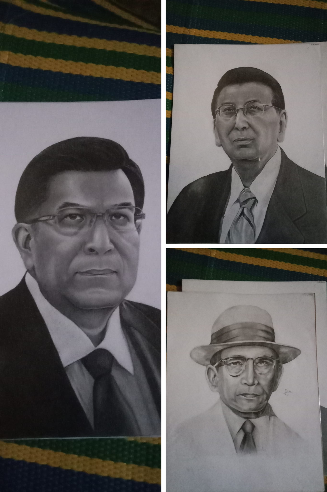
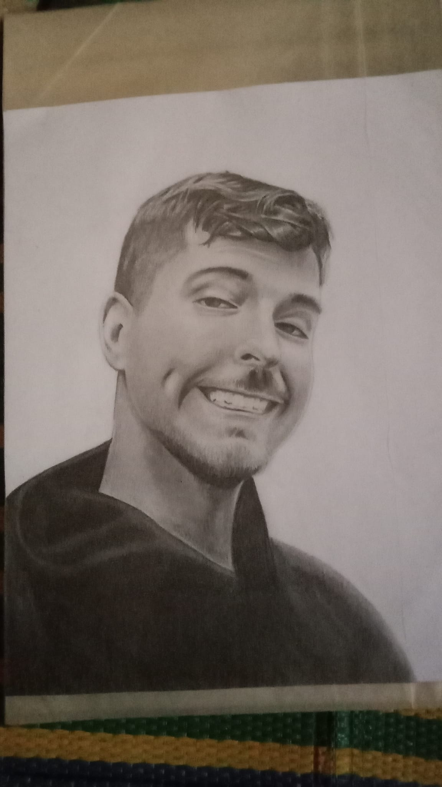
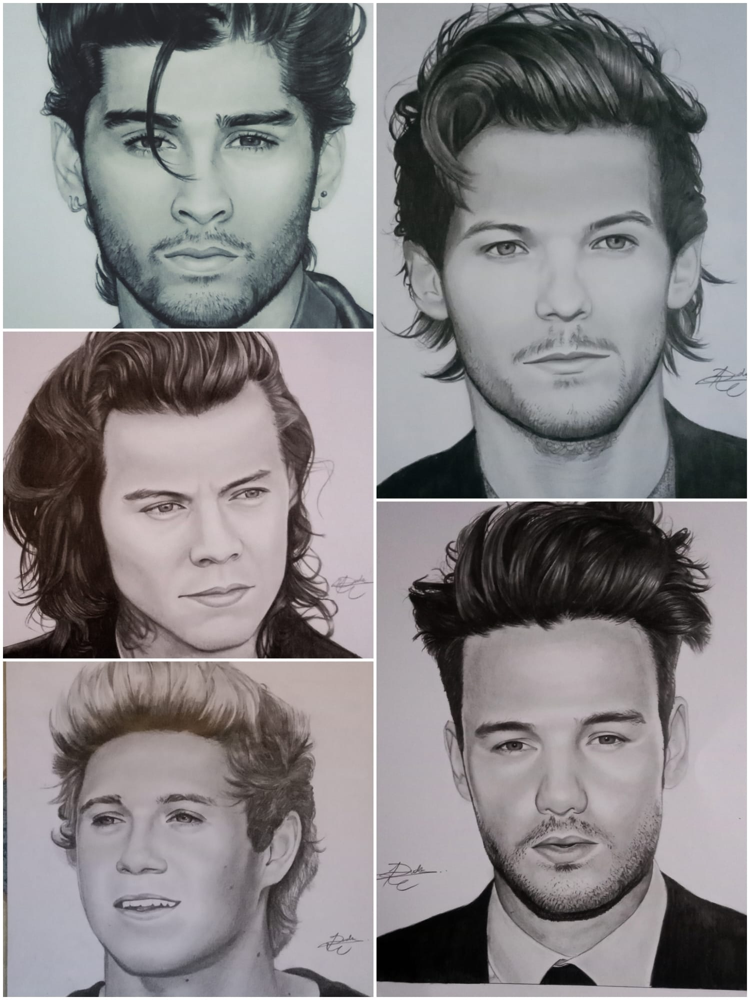
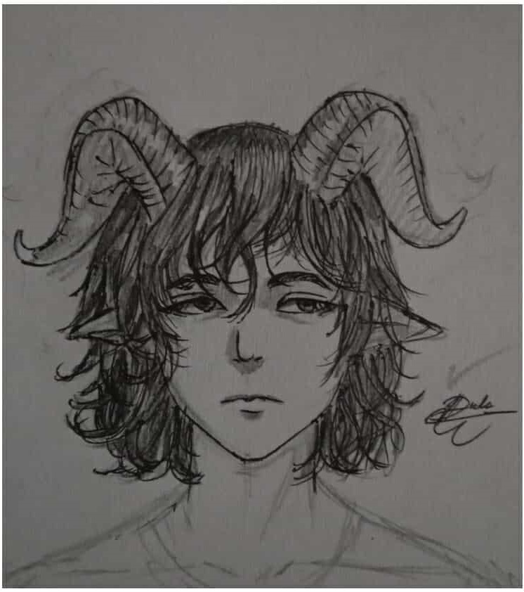
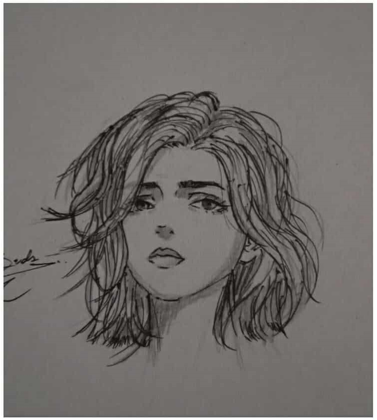
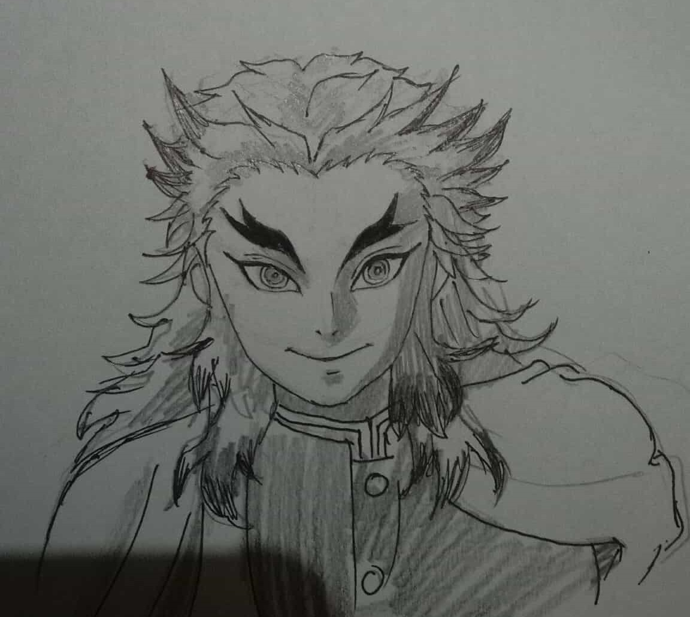
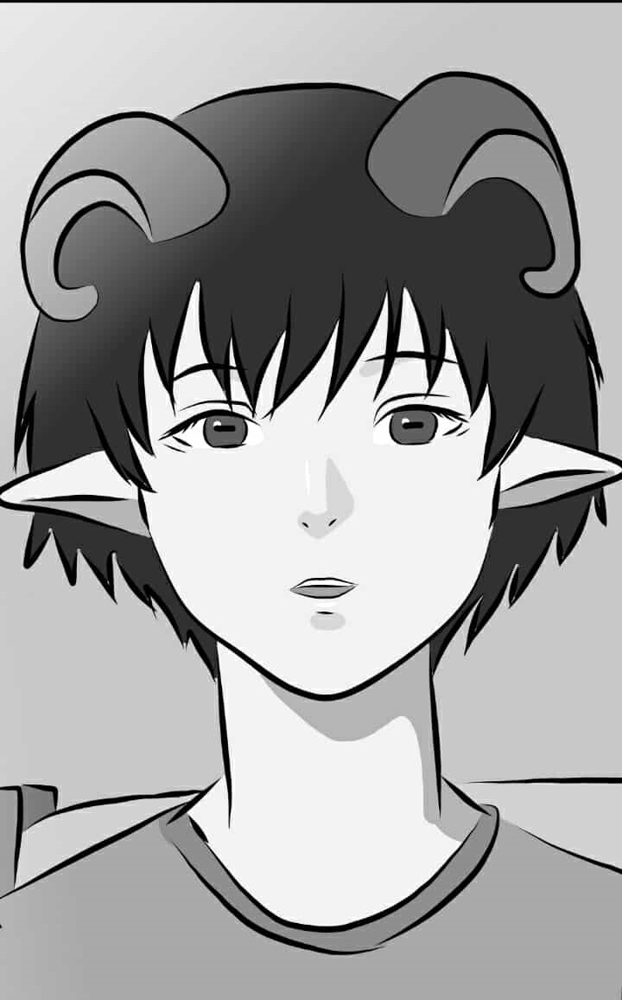

My Skills
Hi! I'm an artist who loves bringing imagination to life through visuals, movement, and words. I create portrait art, anime-style illustrations, and both 2D animations and Minecraft-style 3D animations. When I'm not drawing or animating, you'll probably find me writing ✍️ — whether it's music, poetry, or immersive short stories. I’m all about emotion, color, rhythm, and storytelling. Oh, and I also dabble in music! 🎶 I know a bit of flute recorder — just enough to play a tune and have fun with it.
I'm an Animator
I can do 2d Animation & 3D Minecraft Animation







I'm an Artist
I can do Realism , Anime & Cartoon Arts